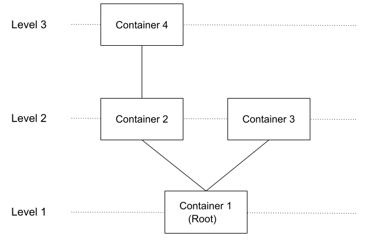
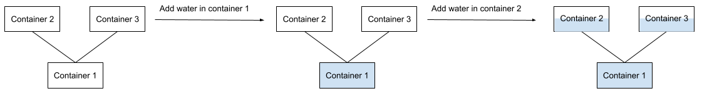
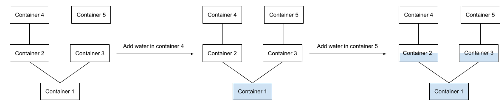

Kick Start 2022 - Round F
Water Container System
Problem
There is a water container system with $$$\mathbf{N}$$$ identical containers, which can be represented as a tree, where each container is a vertex. The containers are connected to each other with $$$\mathbf{N}-1$$$ bidirectional pipes. Two containers connected to each other are always placed on adjacent levels. Formally, if two containers $$$a$$$ and $$$b$$$ are connected to each other, then $$$|level_a - level_b | = 1$$$. Container $$$1$$$ is placed at the bottommost level. Each container is connected to exactly one container on the level below (the only exception is container $$$1$$$, which has no connections below it), but can be connected to zero or more containers on the level above. The maximum capacity of each container is $$$1$$$ liter, and initially all the containers are empty. Assume that the pipe has a capacity of $$$0$$$ liters. In other words, they do not store any water, but only allow water to pass through them in any direction.
Consider the following diagram which is an example of a water container system:

The first level of the system consists of a single container, container $$$1$$$ (root). Container $$$1$$$ is connected to container $$$2$$$ and container $$$3$$$, which are present in the above level, level $$$2$$$. Container $$$2$$$ is also connected to container $$$4$$$, which is present at level $$$3$$$.
You are given $$$\mathbf{Q}$$$ queries. Each query contains a single integer $$$i$$$ which represents a container. For each query, add an additional $$$1$$$ liter of water in container $$$i$$$.
The following diagram illustrates the flow of the water in the system in different conditions:

In step $$$1$$$, after adding $$$1$$$ liter of water in container $$$3$$$, the
water flows downward because the water containers at the lower level are still
empty.
In step $$$2$$$, after adding $$$1$$$ liter of water in container $$$3$$$, the
water flows downward, but as the container $$$1$$$ is already filled
completely, the water is distributed evenly between water containers $$$2$$$
and $$$3$$$.
In step $$$3$$$, after adding $$$1$$$ liter of water in container $$$3$$$, the
water containers $$$2$$$ and $$$3$$$ are completely filled.
In step $$$4$$$, after adding $$$1$$$ liter of water in container $$$3$$$, the
water is pushed up to water container $$$4$$$, which is then completely
filled.
As illustrated in the example above, containers at the same level will have the same amount of water. Find the number of water containers that are completely filled after processing all the queries.
Input
The first line of the input gives the number of test cases, $$$\mathbf{T}$$$. $$$\mathbf{T}$$$ test
cases follow.
The first line of each test case contains the two integers $$$\mathbf{N}$$$ and $$$\mathbf{Q}$$$, where
$$$\mathbf{N}$$$ is the number of containers and $$$\mathbf{Q}$$$ is the number of queries.
The next $$$\mathbf{N}-1$$$ lines contain two integers $$$i$$$ and $$$j$$$ ($$$1 \le
i, j \le \mathbf{N}$$$, and $$$i ≠ j$$$) meaning that the $$$i$$$-th water
container is connected to the $$$j$$$-th water container.
Each of the next $$$\mathbf{Q}$$$ lines contain a single integer $$$i$$$ ($$$1 \le i \le
\mathbf{N}$$$) that represents the container to which $$$1$$$ liter of water should
be added.
Output
For each test case, output one line containing
Case #$$$x$$$: $$$y$$$, where $$$x$$$ is the test case number
(starting from 1) and $$$y$$$ is the number of water containers that are
completely filled after processing all the queries.
Limits
Memory limit: 1 GB.
$$$1 \le \mathbf{T} \le 100$$$.
$$$1 \le \mathbf{Q} \le \mathbf{N}$$$.
It is guaranteed that the given water container system is a tree.
Test Set 1
Time limit: 20 seconds.
$$$1 \le \mathbf{N} \le 65535$$$.
The water container system is a
perfect binary tree.
Test Set 2
Time limit: 60 seconds.
$$$1 \le \mathbf{N} \le 10^4$$$.
Sample
Note: there are additional samples that are not run on submissions down below.2 1 1 1 3 2 1 2 1 3 1 2
Case #1: 1 Case #2: 1
In Sample Case #1, there is $$$\mathbf{N} = 1$$$ water container. The number of completely filled water containers after adding $$$1$$$ liter of water in container $$$1$$$ is $$$1$$$.
In Sample Case #2, there are $$$\mathbf{N} = 3$$$ water containers. The number of completely filled water containers after processing all the queries is $$$1$$$.

After adding $$$1$$$ liter of water in container $$$1$$$: container $$$1$$$
is completely filled, and the remaining containers are empty.
After adding $$$1$$$ liter of water in container $$$2$$$: container $$$1$$$
is completely filled, and containers $$$2$$$ and $$$3$$$ are partially
filled.
Additional Sample - Test Set 2
The following additional sample fits the limits of Test Set 2. It will not be run against your submitted solutions.2 4 4 1 2 1 3 2 4 3 3 3 3 5 2 1 2 5 3 3 1 2 4 4 5
Case #1: 4 Case #2: 1
In Sample Case #1, there are $$$\mathbf{N} = 4$$$ water containers. The number of completely filled water containers after processing all the queries is $$$4$$$, which is already explained in the problem statement.
In Sample Case #2, there are $$$\mathbf{N} = 5$$$ water containers. The number of completely filled water containers after processing all the queries is $$$1$$$.

After adding $$$1$$$ liter of water in container $$$4$$$: container $$$1$$$
is completely filled, and the remaining containers are empty.
After adding $$$1$$$ liter of water in container $$$5$$$: container $$$1$$$
is completely filled, containers $$$2$$$ and $$$3$$$ are partially filled,
and the remaining containers are empty.